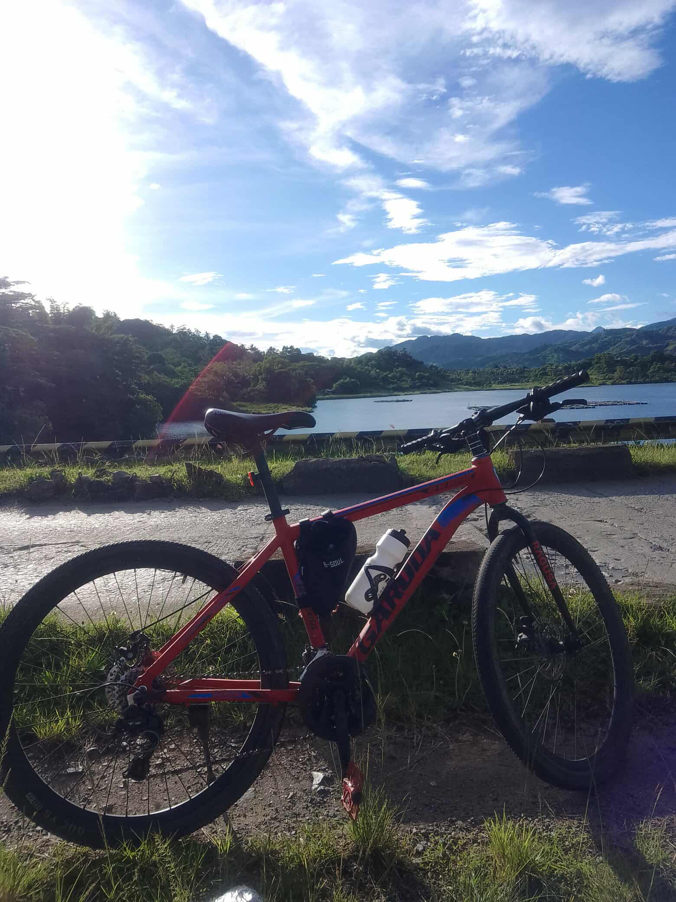
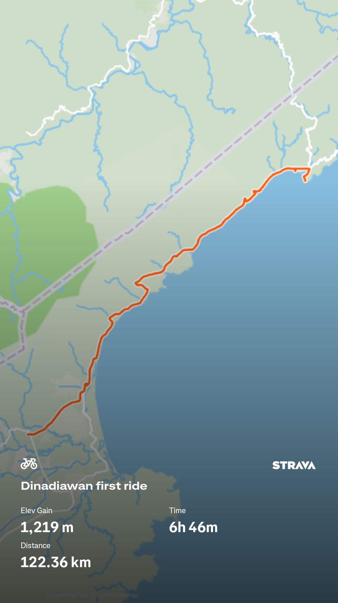

How it Started

My Cycling journey began when I was in high school on 11th grade. My Tita bought it for me for transport use, which cost seven thousand pesos. I use the bike for what it was intended, but as I ride my bike I realized it's more than just for transportation, it can be a way to explore places I have never been before.

Over the years I developed a passion to the sport as I cover longer distances and explore new places. After years of owning and riding my bike, I felt like I want to be a professional cyclist, so I train my self hoping that one day I can compete on National Cycling Tournament in the Philippines.